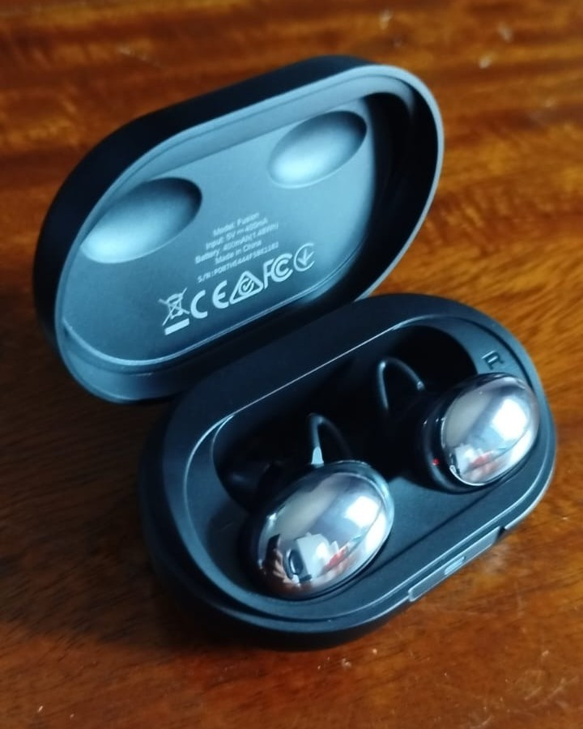
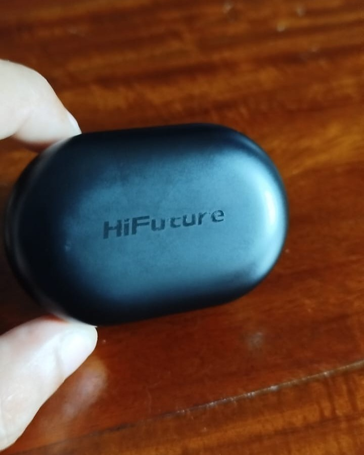
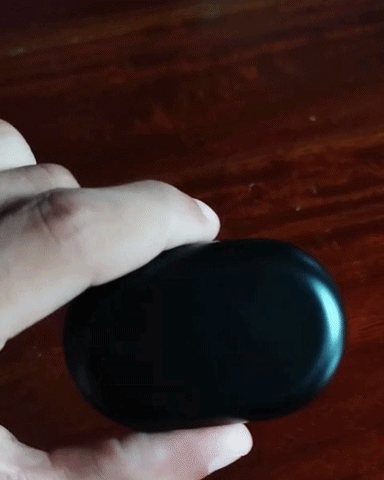
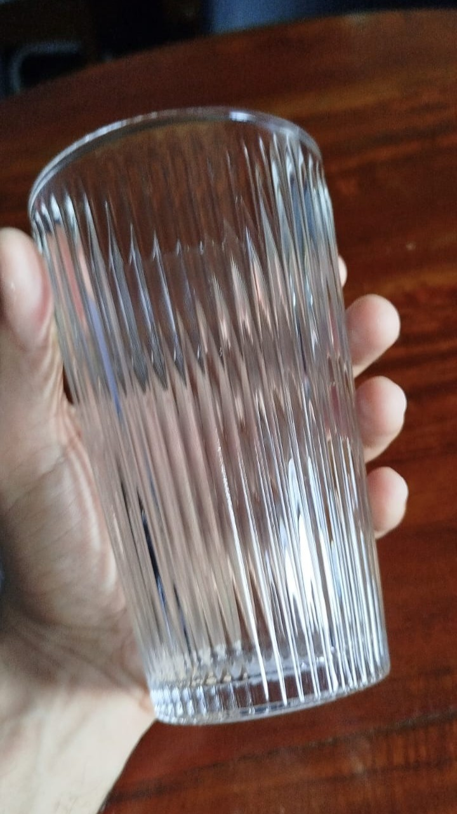
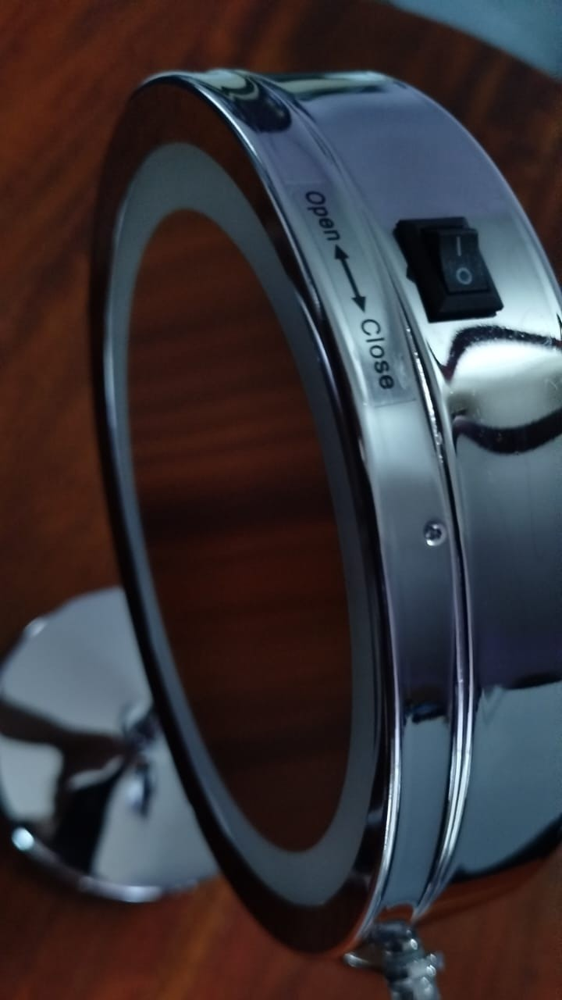
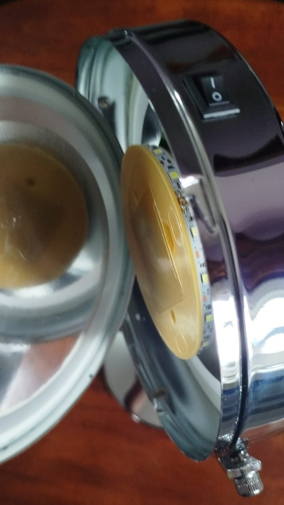
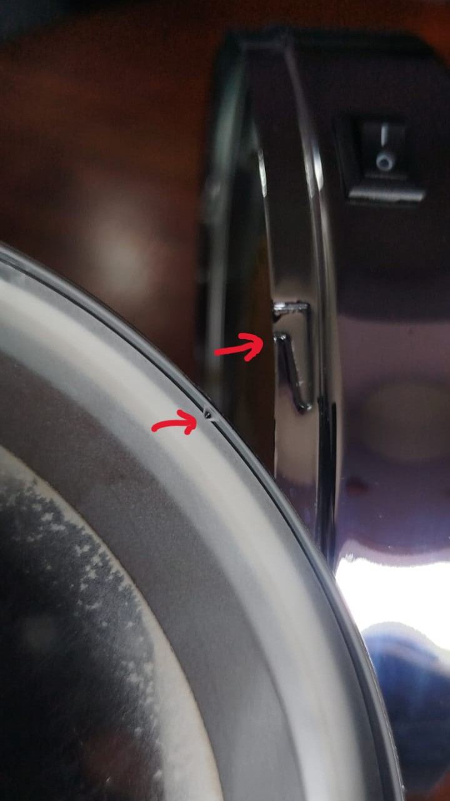

Below are three everyday objects that have usability problems. For each one, I describe the issue, explain how it affects Learnability, Efficiency, and Safety, and give a simple fix.


The earbuds case is hard to open because there are no clear clues (signifiers) that show which side is the lid. The logo on the top is very faint, so if the light doesn’t hit it properly, you can’t see it.
This makes you flip the case around, guessing which side to open it from. The case also has poor affordance, because its smooth and symmetrical shape does not help users understand how it should be held or opened. Users expect the lid to be obvious, so this design does not match their conceptual model.

Use a higher-contrast color for the logo on the lid, or make the logo more embossed so it’s easier to see.

The ribbed texture looks like it should help with grip, but the ridges are shallow and become slippery when wet. This gives users the wrong idea about how the glass works.
People expect the ridges to provide a strong gripping affordance, but instead the vertical ridges make the glass feel unstable. This does not match the user’s conceptual model of how ribbed glasses should work.
Make the ridges larger and deeper, or add a horizontal strip around the glass so it doesn’t slip down out of the hand.



To reach the battery, the user must rotate the entire mirror face and then pry it off. The mirror face is smooth, larger than the hand, and tightly fitted, so both actions are physically difficult.
The mirror gives minimal signifiers that it should rotate or be removed, and it has poor affordance because its shape does not support the rotate-and-pry action. There is also no feedback when rotating, so users cannot tell if they are doing it correctly.
Most people expect a small battery door, not the whole mirror face coming off, so the design does not match their conceptual model.
Use a simple screw-on cover instead of a rotate-and-pry system. A screw-on cover is easier to understand, easier to grip, and safer to open. A textured edge would make it even better.
At a minimum, a pull tab can be attached to the removable face plate so it can assit the user with removal.